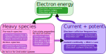

Internals
The internals are not considered part of the public API and are subject to change.
Solution procedure
HallThruster.jl's solution procedure is summarized in the diagram below. At each timestep, we first advance the ions and neutrals, then compute the plasma density and ion current. From there, we solve Ohm's law to get the discharge current, plasma potential, and electric field. Finally, we advance the electron energy equation.

Data structures
There are three main data structures to be aware of when developing for HallThruster.jl: the FluidContainer, the cache, and the params. A FluidContainer contains all information needed to step heavy species (neutrals and ions) through time. We create one of these per neutral and ion species present in the simulation, and treat them largely independently except for when computing chemical and electronic interactions between species. More information about this struct is available below.
HallThruster.FluidContainer — Typestruct FluidContainerStruct containing necessary internal states and caches for solving the heavy species fluid equations and for interfacing with the electron solver.
Fields
density::Vector{Float64}: Mass density in kg/m^3momentum::Vector{Float64}: Momentum density in kg/m^2 sdens_ddt::Vector{Float64}mom_ddt::Vector{Float64}dens_cache::Vector{Float64}mom_cache::Vector{Float64}dens_L::Vector{Float64}dens_R::Vector{Float64}mom_L::Vector{Float64}mom_R::Vector{Float64}flux_dens::Vector{Float64}flux_mom::Vector{Float64}wave_speed::Array{Float64, 0}: Maximum wave speed for this speciesmax_timestep::Array{Float64, 0}: Maximum permissable timestep for this speciesspecies::HallThruster.Species: TheSpecieswhose properties are stored in this structsound_speed::Float64: The sound speed for this speciesconst_velocity::Float64: For neutral species, the constant advection speed of this speciestype::HallThruster.ConservationLawType: The type of species (_ContinuityOnly or _IsothermalEuler)
The params and cache objects are not as formalized as the FluidContainer. Broadly, the cache contains whatever state outside of the fluid containers is needed to reach a solution, including electron properties and temporary caches. This is allocated up front at the start of the simulation and reused throughout. The variables contained in the cache can be seen in the allocate_arrays function in allocation.jl.
The params object contains the cache, all fluid containers, the simulation options, and all reactions. It copies a number of statically-typed parameters over from the Config struct to avoid type instabilities and reduce the precompilation burden that might be incurred if Config was passed to more places in the code. It stores the fluid containers in three ways. First, we have a single flat array (params.fluid_arr), which is useful when we need to iterate over all heavy species and do something, not caring about the specific type. Second, we have a NamedTuple with two keys: continuity for all neutral fluids and isothermal for ion fluids. This is useful for calculating fluxes, where we only care what the governing equations are but not what specific species are present. This is stored in params.fluid_containers. Finally, we have an array storing a similar struct for each species (params.fluids_by_propellant).
There are two places in which the contents of the params object are defined. The first is in the params_from_config function in configuration.jl, and the second is in the setup_simulation function in simulation.jl.